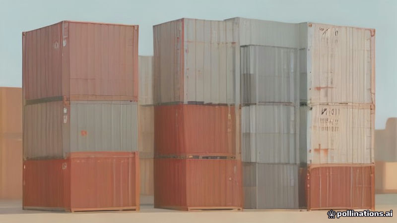

বাণিজ্য মন্ত্রী সতর্ক করেছেন, উন্নয়নশীল রাষ্ট্রে রূপান্তরে রপ্তানিতে $১৭.৫ বিলিয়ন ক্ষতি
Prothom Alo · 2026-11-15
AI-generated illustrationমন্ত্রীর মতে, রপ্তানির ৮৪% পোশাক শিল্প থেকে, বিশেষ বাজার সুবিধা হারালে ক্ষতি হবে
বাংলাদেশের বাণিজ্য মন্ত্রী সতর্ক করেছেন যে, দেশ রপ্তানিতে প্রায় $১৭.৫ বিলিয়ন ক্ষতির মুখোমুখি হতে পারে। তিনি উল্লেখ করেছেন যে, রপ্তানির প্রায় ৮৪ শতাংশ তৈরি পোশাক খাত থেকে আসে, যা বাজার প্রবেশাধিকারের পরিবর্তনের প্রতি সংবেদনশীল।
মন্ত্রীর মতে, বাংলাদেশ যদি উন্নয়নশীল রাষ্ট্রে পুনর্নির্ধারিত হয়, তবে বিভিন্ন বাণিজ্য স্কিমের অধীনে অগ্রাধিকারমূলক বাজার সুবিধা হারাবে, যা রপ্তানির আয় উল্লেখযোগ্যভাবে কমিয়ে দিতে পারে।
Read the original reporting at the links above.
English version
Bangladesh trade minister warns of $17.5bn export loss if status changes
Bangladesh's trade minister warned that the country could face a loss of about $17.5 billion in export earnings. He noted that ready‑made garments account for roughly 84 percent of Bangladesh's export trade, making the sector especially vulnerable to changes in market access.
The minister added that if Bangladesh is reclassified as a developing country, it would forfeit priority market benefits under several trading schemes, which could directly reduce export revenues by the projected amount.